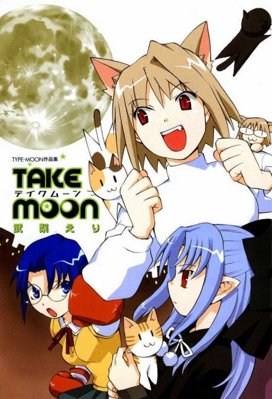
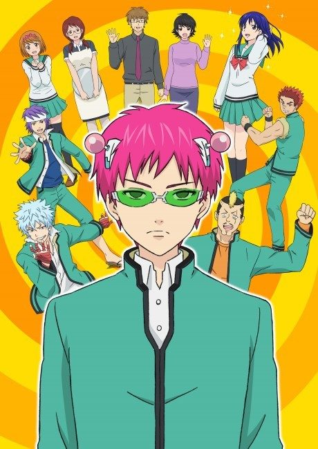
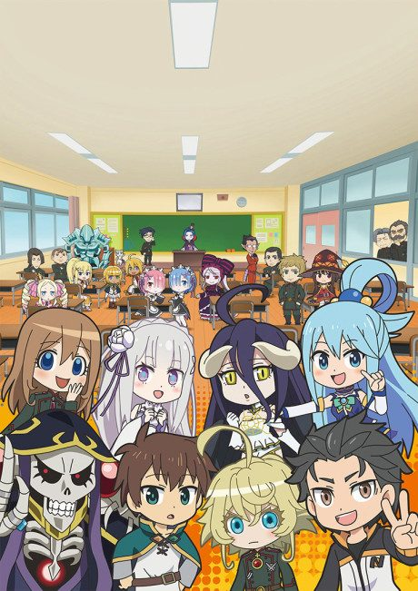
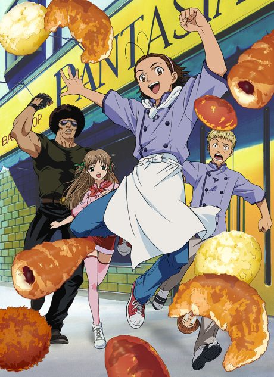
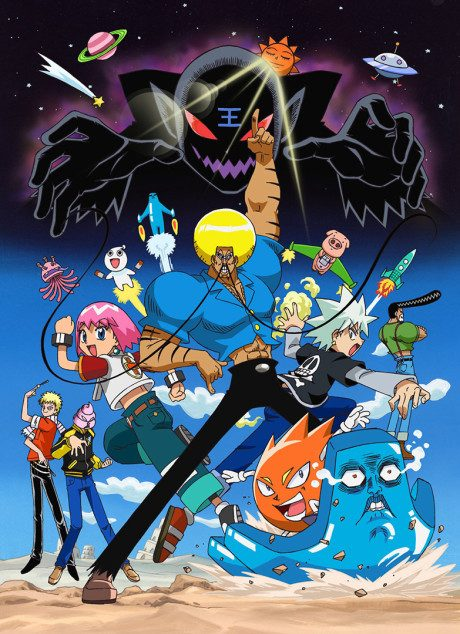
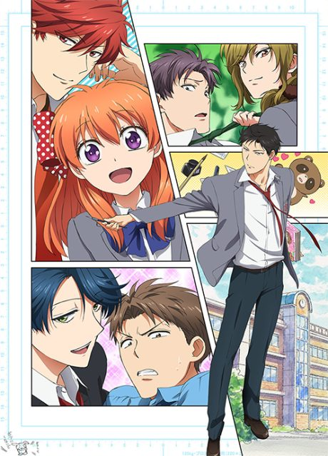
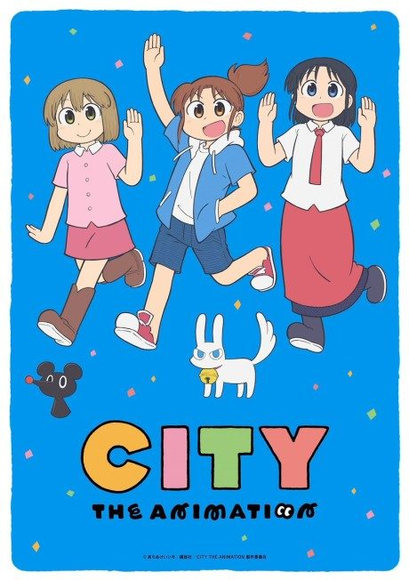

Carnival Phantasm
カーニバル・ファンタズム
A comedy where characters from Type-Moon's Fate and Tsukihime series compete in absurd challenges and parody their own stories.
We haven't found where the anime ends in the manga yet.
7.7AniList score
—Animeter, no votes yet
12episodes, season 1
Rate it or report where you stopped
Anime finished. Where does the manga pick up?
StatusNo source yet
We looked for where the anime ends in the manga but found no source we trust yet. The manga is 29 chapters, finished.
More like Carnival Phantasm

Done8.3
Original7.2
Unclear7.5 Done8.5
Done8.5

Manga Ch. 1797.2 Manga Vol. 78.3
Manga Vol. 78.3
Unclear8.2
Bakemonogatari
Unclear7.4
Good Luck Girl! Novel ahead7.9
Novel ahead7.9
Manga Ch. 368.0
Ouran High School Host Club
Manga Ch. 477.6
Unclear8.0